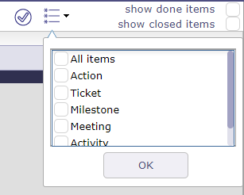
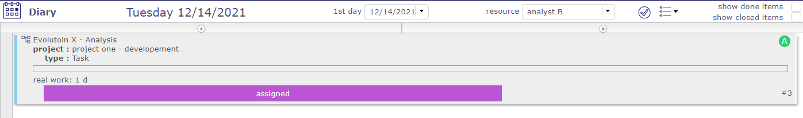
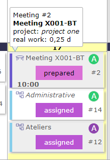

Diary¶
Allows to display planned task to a resource on a calendar view.
This view can be monthly, weekly or daily.
Just click on any task to access directly.
You can show activity without workload on diary screen.
Note
On mouse over the task, you can see a short information about the task.
Meetings are sorted in chronological order within the day.
Calendar selector¶
Day colors:
Yellow day : Current day
Grey days : Days off
Diary calendar selector¶
First day
Displays a specific date or date.
The first day of the week or month is displayed according to the selected view.
Resource
Allows to select the resource calendar.
Select item to display on the liste
Allows you to display only certain items on the calendar like activities, meetings, actions, tickets…
Show done items & Show closed items
Allows to display or not the done and closed items.
Top buttons and Left side buttons
Allows to change current month, week, or day.
Click on  to go to week display mode.
to go to week display mode.
Click on  to return to the last display mode.
to return to the last display mode.
Day number button
Click on the day number button to go day display mode.
Task / Activity / Tickets/ Leaves
Each item the resource is assigned to is displayed in its log.
All types of holidays and deliveries are also displayed.
The color that appears on the objects are those of the project to which they are attached.
